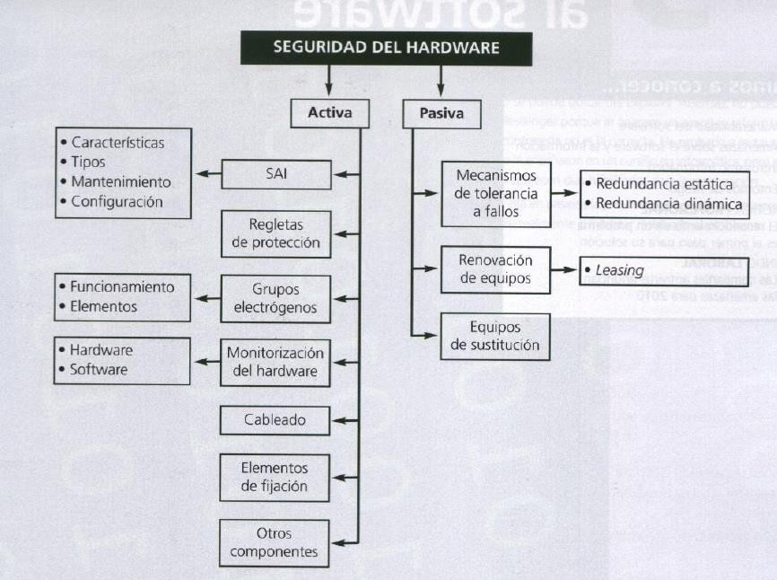

Está demostrado que por mucha seguridad activa que se implemente es imposible cubrir el 100% de las vulnerabilidades, por lo que es imprescindible la implantación de medidas de seguridad pasivas.
Se conoce con el término de tolerancia a fallos a la capacidad que tiene un sistema de seguir funcionando aún en el caso de fallo de algunos de sus componentes.
La estrategia más destacada para conseguir un sistema lo más tolerante a fallos posible, es la redundancia, que no es más que la duplicidad del componente. Esta puede ser de dos tipos:
Los componentes que más se utilizan para la redundancia son:
Pasado un tiempo desde la compra de un equipamiento informático, llega el momento de su renovación y no solo porque deje de funcionar correctamente, sino por su obsolescencia.
Un buen indicador de la obsolescencia puede ser el plazo de amortización de este tipo de equipamiento, que se sitúa en torno a 3 o 4 años.
Una buena forma de solucionar el problema económico que conlleva la renovación de todo un equipamiento informático, es hacerlo mediante financieras como renting y leasing.
Una empresa o un profesional con mucha dependencia de equipamiento informático no puede permitirse parar su actividad por una avería. Existe por tanto, la posible necesidad de contar con equipos de sustitución.
Otra posibilidad, por un coste añadido, es la de contratar este servicio con una empresa de mantenimiento externo.
